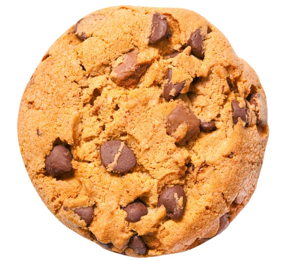

Cookie Recipe
back to home

Description of the cookies:
These classic chocolate chip cookies are soft and chewy on the inside with a slightly crispy edge. The combination of butter, granulated sugar, and brown sugar gives them a rich and caramel-like flavor. The addition of vanilla extract enhances the overall taste and aroma of the cookies. The all-purpose flour provides structure, while the baking soda helps them rise and gives them a slightly tender texture. The semisweet chocolate chips add bursts of chocolatey goodness in every bite, melting slightly to create pockets of gooey chocolate. These cookies are perfect for satisfying your sweet tooth and are sure to be a crowd-pleaser for any occasion!
Ingredient List
- 1 cup (2 sticks) unsalted butter, softened
- 1 cup granulated sugar
- 1 cup packed brown sugar
- 2 large eggs
- 1 teaspoon vanilla extract
- 3 cups all-purpose flour
- 1 teaspoon baking soda
- 1/2 teaspoon salt
- 2 cups semisweet chocolate chips
Steps
- Preheat your oven to 350°F (175°C). Line a baking sheet with parchment paper or silicone baking mat and set it aside.
- In a large mixing bowl, cream together the softened butter, granulated sugar, and brown sugar until light and fluffy. You can use a hand mixer or stand mixer for this step.
- Add the eggs, one at a time, beating well after each addition. Stir in the vanilla extract and mix until well combined.
- In a separate bowl, whisk together the all-purpose flour, baking soda, and salt. Gradually add the dry ingredients to the wet ingredients, mixing until just combined. Be careful not to overmix the dough.
- Fold in the semisweet chocolate chips until evenly distributed throughout the dough.
- Scoop rounded tablespoons of dough onto the prepared baking sheet, spacing them about 2 inches apart. You can use an ice cream scoop or your hands to form the cookie dough balls.
- Bake in the preheated oven for 10-12 minutes, or until the edges of the cookies are golden brown. The centers may appear slightly undercooked, but they will firm up as the cookies cool.
- Once baked, remove the cookies from the oven and allow them to cool on the baking sheet for a few minutes. Then transfer them to a wire rack to cool completely.